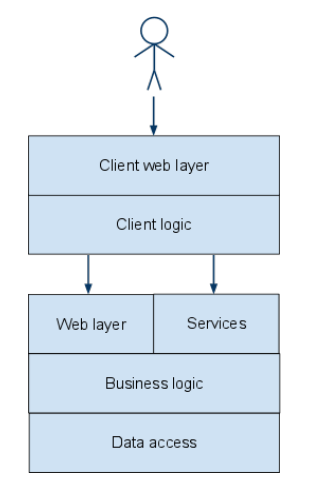
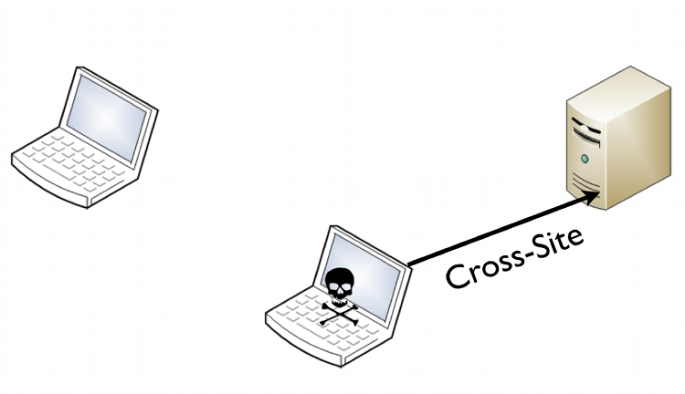

But first...
Who am I?

- I write code and I like to hack stuff
- Leader of the Security Competency group at BEKK
- OWASP Norway Chapter lead
- Member of Norwegian Honeynet Project
JavaScript
if (a == "Hello" && a == "world") { //Huh?
document.write("Hello world")
}
var a = {
t: false,
valueOf: function() {
return (this.t = !this.t) ? "Hello" : "world"
}
}
JavaScript
Single Page Web App
- Browser loads a single HTML-file
- File includes references to JavaScript
- The JavaScript loads data and templates
- Navigation without reload
-

Single Page Web App - state
- State is maintained via #-URLs
http://example.com/#/inbox/32
- Alternative approach:
pushState() - Change URL without reload
JS HTML Templating
- Mix between JavaScript and HTML
- Typically compiled to javascript (server-side or client-side)
- Templating languages: mustache.js, underscore.js etc.
<ul>
<% emails.each(function(email) { %>
<li><a href="#/emails/<%= email.get("id") %>"><%= email.get("subject") %></a></li>
<% }); %>
</ul>
<ul>
<% emails.each(function(email) { %>
<li><a href="#/emails/{{ email.get("id") }}">{{ email.get("subject") }}</a></li>
<% }); %>
</ul>
Example: Underscore.js
- Utilities and HTML templating
- Templating has three functions:
<% %>- evaluate code<%= %>- output<%- %>- HTML-escaped output
Domain Driven Security analysis - Single Page
Circumventing client side validation/calculations
- Changing HTML
- Changing javascript data within the browser
- Changing request in proxy
- Changing response in proxy
- Directly attack the JSON service
Wide-open services
- Is your service showing too much?
- Does it allow others to modify its system data?
- Can user A read or modify user B's private data?
- Can I invoke admin functionality by invoking the JSON services directly?
Wide-open services - Mass assignment
- Change fields not available through UI
- Send JSON request with unexpected fields
Wide-open services - Fixing
- Limit exposed fields in reponses
- Ignore unwanted fields in requests
- Consider implementing a server side contract layer
- Remember horizontal and vertical authorization
Gluttonous services - Overconsumption
- The app is storing JSON documents in a document database with no filtering...
- And Attacker sends 100,000 fields for each doc...
- Example: The maximum MongoDb document size is 16MB
- → Again please strip unwanted fields!
Cross Site Request Forgery (CSRF)
- User visits attacker's or a hacked site
- Site tricks browser into initiating a request towards a victim site
- GET - could be an <img> tag
- POST - could be a hidden form + Javascript
- Examples:
- Change DNS of home router
- Post to twitter or Facebook
- Request application on internal network
CSRF - Is it really a problem?
- @homakov posted a blog post with CSRF vulnerabilities in:
- github
- slideshare
- vimeo
- bitbucket
- heroku
- Heroku bug:
<img src=xxx/update?site_name[name]=yyy>
- ... rename site from xxx.heroku.com to yyy.heroku.com
CSRF + JSON
<html>
<form action="http://example.com" method="post" enctype="text/plain">
<input name='{"a":1,"b":{"c":3}, "ignore_me":"' value='test"}' type='hidden'>
<input type=submit>
</form>
</html>
{"a":1,"b":{"c":3}, "ignore_me":"=test"}
CSRF + Cross Domain XHR
function fileUpload(url, fileData, fileName) {
var fileSize = fileData.length;
var boundary = "xxxxxxxxx";
var xhr = new XMLHttpRequest();
xhr.open("POST", url, true);
xhr.setRequestHeader("Content-Type",
"multipart/form-data, boundary="+boundary);
xhr.setRequestHeader("Content-Length", fileSize);
var body = "--" + boundary + "\r\n";
body += 'Content-Disposition: form-data; name="contents"; filename="'
+ fileName + '"\r\n';
body += "Content-Type: application/octet-stream\r\n\r\n";
body += fileData + "\r\n";
body += "--" + boundary + "--";
xhr.send(body);
return true;
}
Using anti forgery tokens
$("body").bind("ajaxSend", function(elm, xhr, s){
if (s.type === "POST" || s.type === "DELETE" || s.type === "PUT") {
xhr.setRequestHeader('X-CSRF-Token', authentication.csrf_token);
}
});
Testing your JSON services
- A REST API is stable/static - the website's UI is not
- Integration tests - boot and run real HTTP requests
CS#RF
- Does a hash change make your app change data?
- Open document in edit mode:
http://conference.cfn/#talks/1/edit - Delete document:
http://conference.cfn/#talks/1/delete - Circumvents CSRF-protection - the app will actually send the token
CS#RF - why does it work?
- Browser opens url
- JS framework bootstraps (this allows bookmarking)
- JS framework processes route
- CSRF token is included in ajax request
- PWN
CS#RF - protection
- A hash change should not cause changes on the server
- Bring up delete dialog on:
http://conference.cfn/#talks/1/delete
And now...
Reflected Cross Site Scripting

Reflected - Example
http://example.com/?error=Invalid+name
<div class="error">Invalid name</div>
http://example.com/?error=<script>alert(1)</script>
<div class="error"><script>alert(1)</script></div>
Stored/Persistent Cross Site Scripting


Content Sniffing
- Browser secondguesses Content-Type header
- Looks at reponse: content, URI and and HTML-tag initiating request
- Trick older browsers (<= IE9) into guessing the wrong Content-Type
- Example: GIFAR - Both a valid GIF and a JAR
- Example: JHTMLSON - Valid JSON, sort of valid HTML
Avoiding Content Sniffing
- Disable content sniffing:
X-Content-Type-Options: nosniff
Content-Disposition: attachment; filename=data.json
DOM-based Cross Site Scripting

DOM-based - XSS
- Occurs in javascript
- Not necessarily visible at the server
http://ex.fm/#!/explore/<script>alert("@vlycser");</script>
- Insecure handling of input in javascript
DOM-based - XSS - sources
- document.URL
- document.documentURI
- document.URLUnencoded
- document.baseURI
- location
- location.href
- location.search
- location.hash
- location.pathname
- window.cookie
- window.referrer
- window.name
- ++
Some unsafe JavaScript
- eval("...user data...")
- setTimeout("...user data...", t)
- setInterval("...user data...", t)
- new Function("...user data...")
- document.write("...user data...")
- document.writeln("...user data...")
- element.innerHTML = "...user data..."
- Range.createContextualFragment("..user data...")
- HTMLButton.value = "..user data..."
- window.location = "user supplied URI"
- a.href = "user supplied URI"
- ++
Unsafe jQuery functions
- $()
- $.after()
- $.append()
- $.appendTo()
- $.before()
- $.html()
- $.insertAfter()
- $.insertBefore()
- $.prepend()
- $.prependTo()
- $.replaceAll()
- $.replaceWith()
- $.unwrap()
- $.wrap()
- $.wrapAll()
- $.wrapInner()
Safe jQuery functions
- $.text()
- $.attr() - unless attr is JS event handler
jQuery encoder
- $.encoder.canonicalize()
- $.encoder.encodeForCSS()
- $.encoder.encodeForHTML()
- $.encoder.encodeForHTMLAttribute()
- $.encoder.encodeForJavaScript()
- $.encoder.encodeForURL()
HTML JavaScript Templates
- What kinds of coding/output-possibilites does it have?
- Does it escape input?
- What kinds of escaping?
- Is the escaping context based?
Underscore.js
- Tags:
<% %>- evaluate code<%= %>- output<%- %>- HTML-escaped output
- Escaping
_.escape = function(string) { return (''+string).replace(/&/g, '&'). replace(/</g, '<'). replace(/>/g, '>'). replace(/"/g, '"'). replace(/'/g, '''). replace(/\//g,'/'); };
This is all well and good as long as...
- ... you are not outputing inside javascript event handlers.
- ... you are not using quote-less attributes:
<img title=<%- model.title %> ... >
<img title=monkey onmouseover=alert(/XSS/.source) ... >
- ... you are not outputting data inside
styleattributes or tags - ... you are not outputting data inside
scripttags
<button onclick="return confirm('Really delete <%- model.title %>')">Delete</button>
<button onclick="return confirm('Really delete ');alert(&x27;XSS')">Delete</button>
For more info - see the OWASP XSS Prevention Cheat sheet
helmet.js - an experiment
- Code on github: https://github.com/eoftedal/helmet.js
<% %>- evaluate code<%- %>- unescaped/raw output<%= %>- contextually escape output or refuse output- Playground at: http://research.insecurelabs.org/helmet.js
helmet.js - bypass
<a href=<%=url%> title="Buy <%=number%> at <%=price%> = $<%=cost%>/month AND SAVE $$$">BUY NOW</a>
{"url":"","number":42,"price":"onmouseover","cost":"=alert(1)/"}
<a href="title="Buy" 42="" at="" onmouseover="$=alert(1)//month" and="" save="" $$$"="">BUY NOW</a>
helmet.js - bypass
<svg> <a xmlns:xlink="http://www.w3.org/1999/xlink" xlink:href="#"> <set attributeName="xlink:href" begin="0s" to="<%= url %>" /><circle r=40> </a> </svg>
{"url":"javascript:alert(1)"}
Content Security Policy
Content-Security-Policy: default-src 'self'; script-src 'self' *.googleapis.com
eval/setTimeout/setInterval/new FunctionMustache Security
- "A wiki dedicated to JavaScript MVC security pitfalls"
- By XSS wizard Mario Heiderich
- {}SEC-A Are template expressions executed without using eval or Function? (yes = pass)
- {}SEC-B Is the the execution scope well isolated or sand-boxed? (yes = pass)
- {}SEC-C Can only script elements serve as template containers? (yes = pass)
- {}SEC-D Does the framework allow, encourage or even enforce separation of code and content? (yes = pass)
- {}SEC-E Does the framework maintainer have a security response program? (yes = pass)
- {}SEC-F Does the Framework allow or encourage safe CSP rules to be used (yes = pass)
Mustache Security
Attack - JSON in iframes
- Drag n drop clickjacking
- Fake captchas - steal CSRF-token
- Paul Stone ninja pixel stealing¹
- Hide JSON from iframes:
X-Frame-Options: DENY
- Force download instead of view:
Content-Disposition: attachment; filename=data.json
Protection:
Server side JavaSript
- eval on the server side...
- ...is so much worse than SQL-injection
- Direct remote code exec
Using JavaScript frameworks
- OWASP Top 10 2013 - A9 Using Components with known vulnerabilities
- If you use a JS framework...
- Keep it up to date!
- Yahoo! 0-Day - 13. jan 2013
- sessvars.js
- Security update May 17, 2008 - Sanitizer added to prevent eval() of malicious code
Warning! Shameless plug ahead
Retire.js
- Goal: Detect the use of JavaScript libraries with known vulnerabilities
- https://github.com/bekk/retire.js
- Command line scanner
- Grunt plugin
- Chrome and Firefox plugin
Retire.js
- Source: Manually maintained by reading release notes and issue trackers
- Detection:
- Filename/URL
http://ajax.googleapis.com/ajax/libs/jquery/1.5.1/jquery.min.js - Comments/contents
/*! * jQuery JavaScript Library v1.5.1 - Hash of a minified file
- Running code
jQuery.fn.jquery Handlebars.VERSION
- Filename/URL
$ retire --help
Usage: retire [options]
Options:
-h, --help output usage information
-V, --version output the version number
-p, --package limit node scan to packages where parent is mentioned in package.json (ignore node_modules)
-n, --node Run node dependency scan only
-j, --js Run scan of JavaScript files only
-v, --verbose Show identified files (by default only vulnerable files are shown)
-x, --dropexternal Don't include project provided vulnerability repository
-c, --nocache Don't use local cache
--jspath <path> Folder to scan for javascript files
--nodepath <path> Folder to scan for node files
--path <path> Folder to scan for both
--jsrepo <path> Local version of repo
--noderepo <path> Local version of repo
--proxy <url> Proxy url (http://some.sever:8080)
--ignore <paths> Comma delimited list of paths to ignore
Retire.js - Chrome/Firefox extension
- Scans while you surf
- Reports to the developer console
- https://github.com/bekk/retire.js/tree/master/chrome

Hypothesis:
Most web sites are using the jQuery version available when the site was first built
Let's ask them
Mass scanning domains
- Load landing page
- Detect any script loaded
- Run retire.js on the script files
- Repeat for each domain
150,000 .no-domains - jQuery
- 13,741 sites using 1.10.2
- 11,497 using version 1.8.x
- 15,353 using version 1.7.x
- 6,387 using version 1.6.x
- 2,542 using version 1.5.x
- 11,209 using version 1.4.x
- 596 using version 1.3.x
- 2400 using version 1.2.x
- 133 using version 1.1.2
Alexa Top 100,000
- Top 1,000 - 551 - 55,1% vulnerable
- Top 10,000 - 6,185 - 61,85% vulnerable
- Top 100,000 - 60,866 - 60,866% vulnerable
- jQuery versions from 1.0.0 to 1.12.2.3
Fortune 500
- 385 - 77% vulnerable
- jQuery versions from 1.1.3.1 to 1.10.2
And finally
Questions?
-
Web/JS security people to follow on twitter:
- @0x6D6172696F
- @johnwilander
- @wisecwisec
- @garethheyes
- @kkotowicz
- @homakov
- @troyhunt
-
Stuff to take a look at:
- https://github.com/mozilla/scanjs
- https://github.com/bekk/retire.js
<Thank You!>
Slides and code at github.com/eoftedal